Contributions Week-V
Hello World.!
This is my weekly report 5 on the AR Library for Processing-Android which is a Library that will help creating Augmented Reality applications using Processing through Android Mode.
On continuation to the previous week, this week began with refining the Plane renderer which is used to detect planes. On the previous week the ability to add colors to the plane was added this week on extension to that the ability to set some basic textures to the detected planes were added, which are shown in the following pictures.
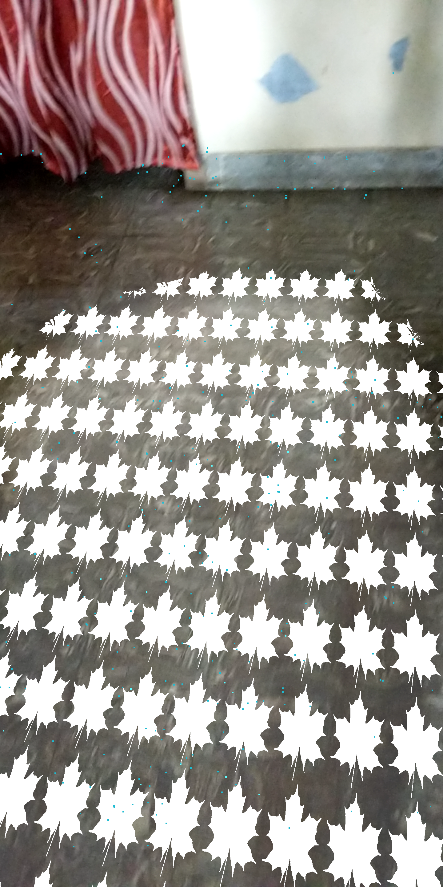 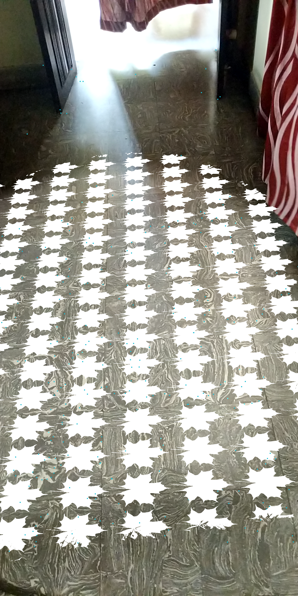 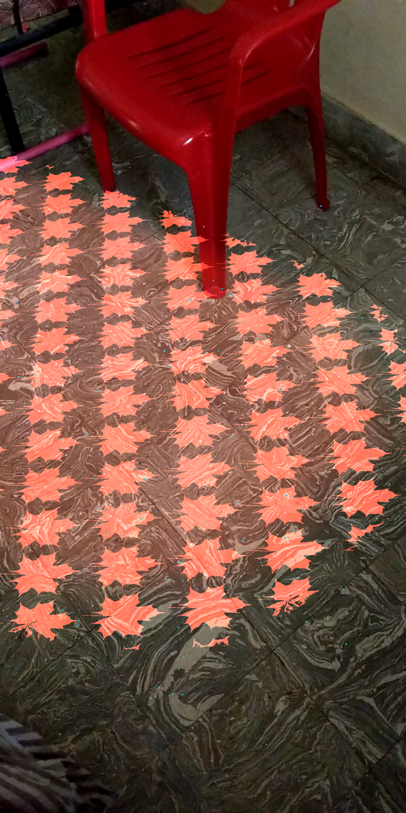
The build scripts which were migrarted from the ant build system to the gradle build system were pushed in a seperate branch namely new-build and the master branch is not disturbed yet, the build instructions to build the library using Gradle will be updated soon i.e., README file will be updated soon.
Github Link : https://github.com/SyamSundarKirubakaran/processing-ar/tree/new-build
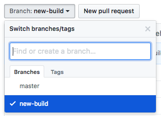
Milestone:
As suggested by Jesus during the previous evauation, I've created a Milestone for the release of stable version of the AR Library.
- The Milestone consist of a number of issues currently and is about 66% complete with the implementation of the plane and point cloud sub-renderers.
Github Link : https://github.com/SyamSundarKirubakaran/processing-ar/milestones
- I've made a Release .i.e., AR Renderer Pre-Release v1.0-alpha that contains all the basic sub-renderers required to run AR thrugh processing. Please read Release notes for further information.
Github Link : https://github.com/SyamSundarKirubakaran/processing-ar/releases/tag/v1.0-alpha
- As suggested by Jesus and Andres, I've raised a number of issues to track my progress on building the AR library which was later added to the milestone. The issues that are self-assigned will be done by myself but suggestions from your side that would help my progress are most welcome as comments in the appropriate issues.
Issue #1 : [PRIMARY] Basic AR Functionalities
Issue #2 : [BUILD] Migration to Gradle Build System
Issue #3 : [TESTING] Testing Processing AR Library - Multiple device
Issue #4 : [ENHANCE] Integration with Processing Renderers
Github Link : https://github.com/SyamSundarKirubakaran/processing-ar/milestones
Github Link : https://github.com/SyamSundarKirubakaran/processing-ar/releases/tag/v1.0-alpha
Issue #1 : [PRIMARY] Basic AR Functionalities
Issue #2 : [BUILD] Migration to Gradle Build System
Issue #3 : [TESTING] Testing Processing AR Library - Multiple device
Issue #4 : [ENHANCE] Integration with Processing Renderers
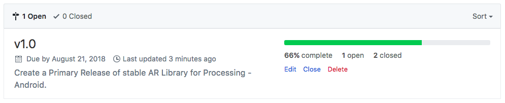 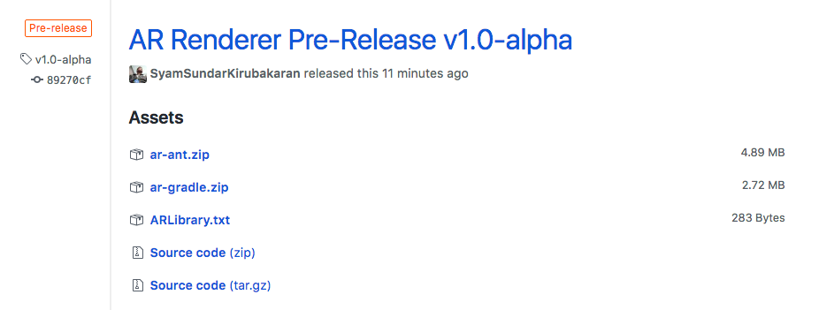
Point Cloud Renderer:
The point cloud Renderer contains a set of observed 3D points and confidence values. To be exact the point cloud has multiple functions when it comes to AR and most of all the point clouds are the collection of points that gives raise to the feature points also known as anchors over which the objects are placed. The feature points are the ones that give better understanding of the found plane by identifying a unique feature of that plane. These points are usually formed in the regions where there are more contract .i.e., the point where a color switch is evident.
- Image (1) - shows a simple AR scene over which the point cloud renderer is acting upon.
- Image (2) - shows the zoomed in image of (1) where you can find the point clouds and the places where they are formed.
- Image (3) - gives you a better picture of how they are formed, the image has a high contrast which switches colors quite often, here you can infer that more point clouds are formed more than the previous because of this reason (contrast).
Youtube Link : https://youtu.be/YLghOMM2fow
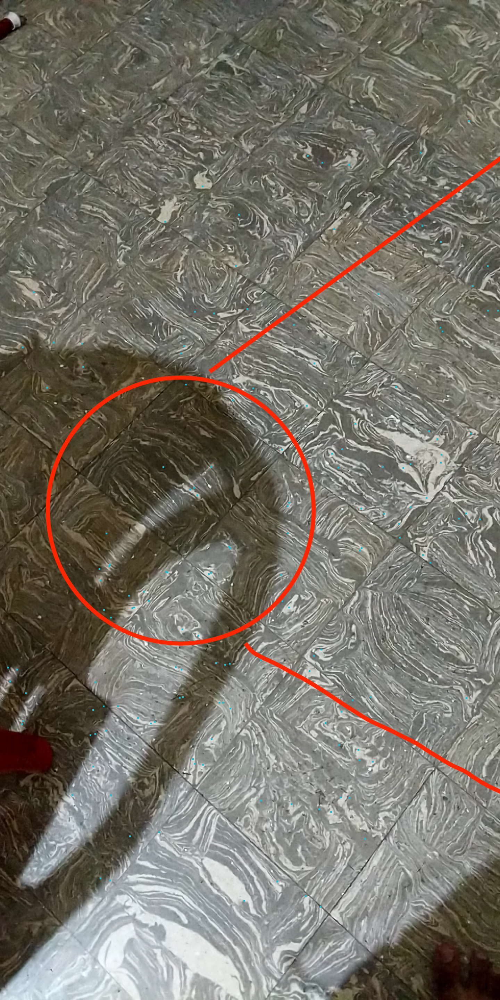 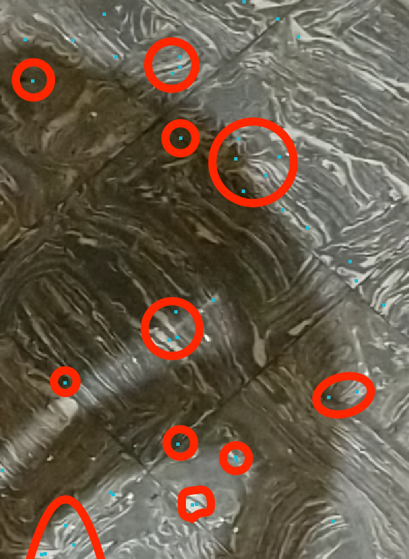 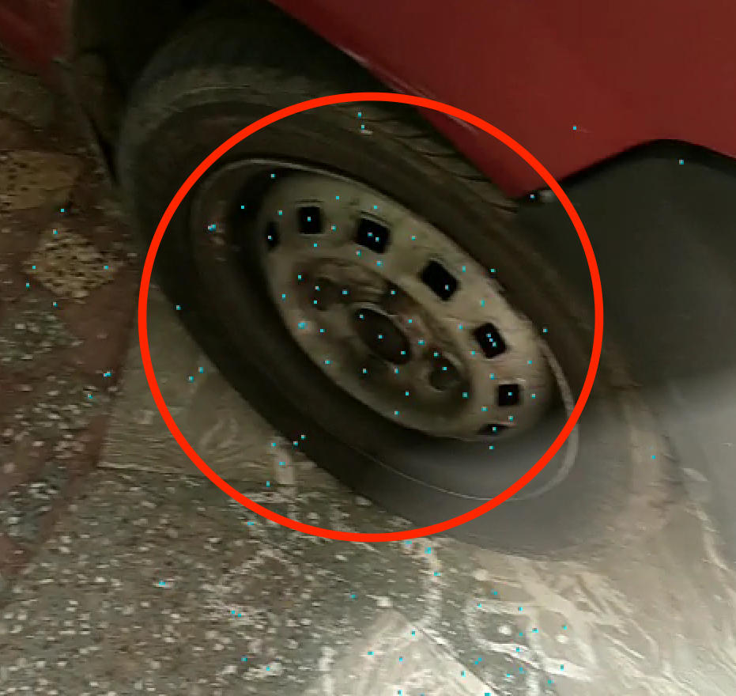
Integration with Processing core:
On placing sketch.handleDraw() turns the AR renderer void. Andres was able to give me a clear picture on why this happens : This is because the Processing renderer is unaware of the AR sub-renderers that are implemented so far. This is important because the main objective is to bring about a library that is able to renderer 3D objects in the AR scene and give life to it through simple processing sketches. Like importing objects into the AR scene though processing sketch and so on. This can be accomplished by having the VR Library as reference and the standard P3D renderer which is used to import objects into the app through processing sketch. I've started an issue for this integration feel free to give your valuble comments there which might help me in this process of integration.
[ENHANCE] Integration with Processing Renderers
Also I've started with the initial stage of integration right away. At the end the instead of clearing the screen with background, it should use the background renderer to set the camera image as background
and then use the session, frame, and camera objects to place the shapes drawn with Processing on the right place.
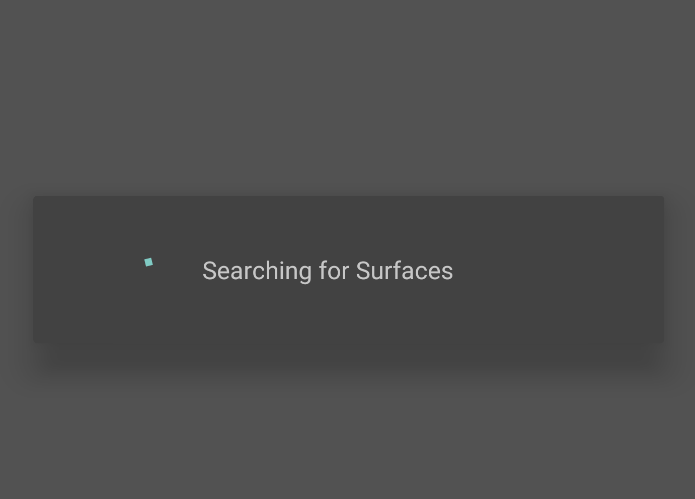 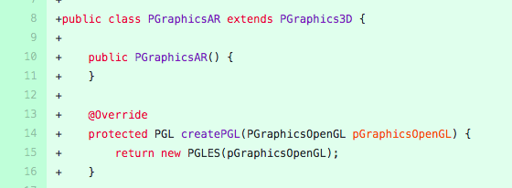 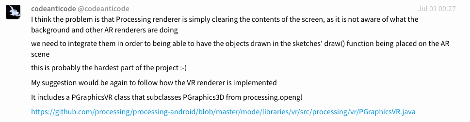
Useful Link : https://github.com/processing/processing-android/pull/346
- This has the collection of commits that Andres made while creating the VR library and this definitly gives a better view on how I should make progress in make this integration.